Autonomous Navigation
Level 4 Autonomy with 3D Lidar ,Radar , Ultrasonic Sensors , CAN , Camera
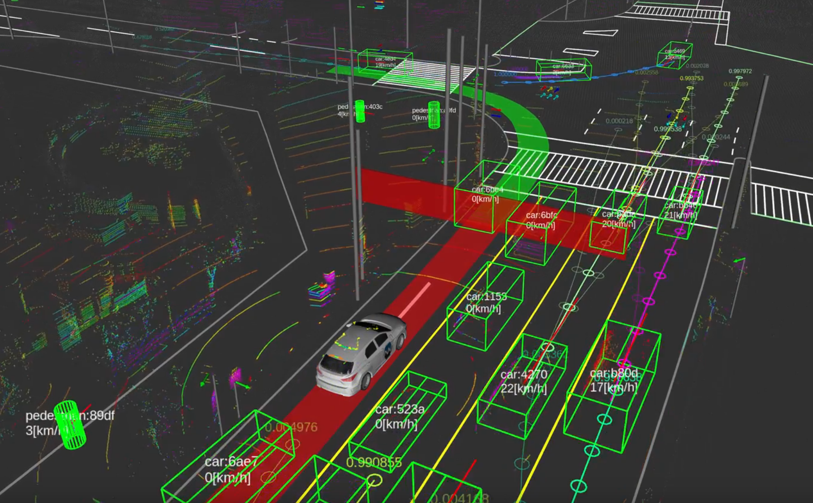
About the Project
I've always been interested in autonomous navigation, planning, and control, so I seized the opportunity when i got an opportunity to work for RBEI. This also proved a great opportunity to experiment with pointcloud processing, something that has fascinated me since the beginning of its use in autonomous vehicles. Having seen people plug into the OBD port to diagnose modern day vehicles have always facinated me.
At Bosch , most of my colleagues were 10+ years experience primarily the ADAS space often dealing with intense topics such as
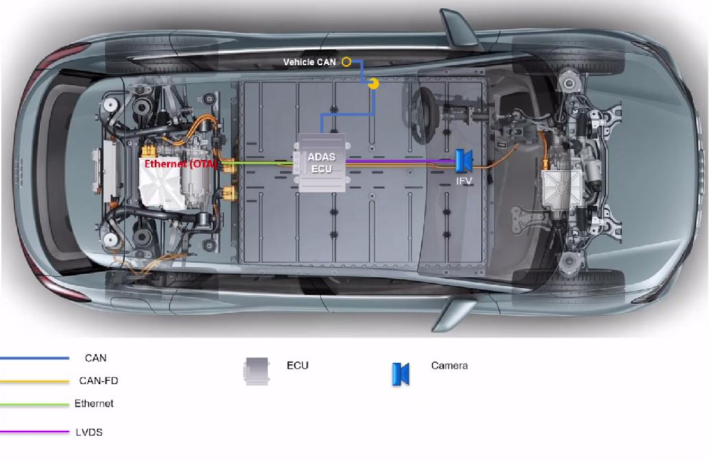
- LKA ,
- Lane Switch
- Park Assist
- Emergency Braking
- Adaptive Cruise Control
- Electronic Stability Control
- ABS
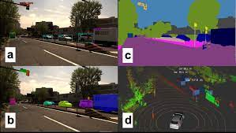
I was brought into the team in 2018 as i have the above mentioned skills primarily from my experience in the Robotics domain . Ever since that i was part of an internal R&D project aimed towards developing a prototyping platform and on the way adding competency towards handling L3 ,L4+ autonomous vehicle related work. Even though i was in a big corporate like Bosch , the environment and the team i was with was almost like a startup where everyone handles a wide variety of topics and is very agile .
Hardware used:
- Maini Buggy which was customised with a Powersteering and CAN control
- Velodyne VLP-16 LIDAR
- Bosch MRR(Mid Range Radar , upto 300m range)
- Bosch EPS(Electronic Power Steering Unit )
- USS (Bosch Ultra Sonic Sensors)
- MPC (Bosch Multi Purpose Camera)
- Bosch Vehicle Motion and Position Sensor (VMPS), using GNSS+IMU
- Bosch Wheel Speed sensors
- XSense RTK
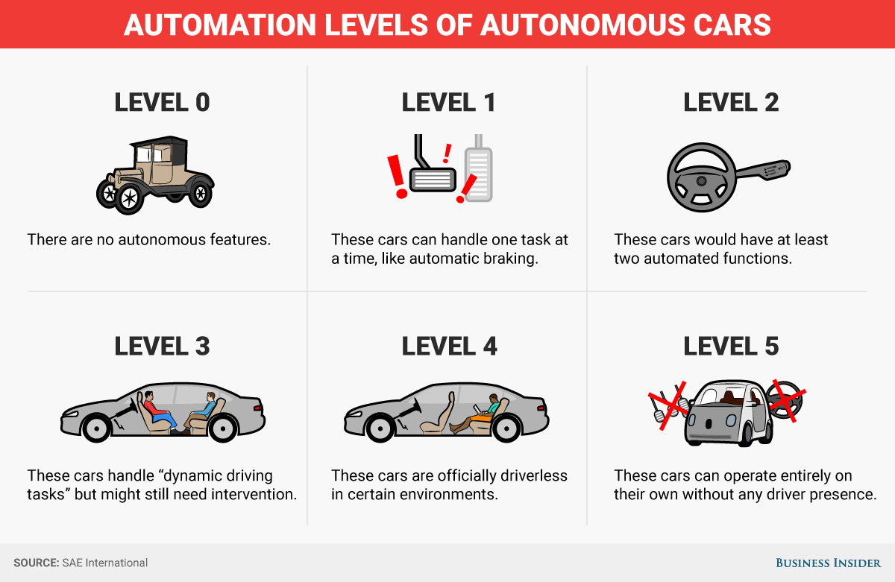
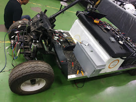
Skills Involved
- ROS Navigation Stack, ROS plugins
- C++ & Python for real-time embedded control
- Motion planning & control algorithms
- Laser/LIDAR data handling
- Machine perception
- PCL (Point Cloud Library)
- Pointcloud filtering
- Gazebo, RViz
- Wireless network issue debugging
- Troubleshooting real robot hardware
- CAN bus
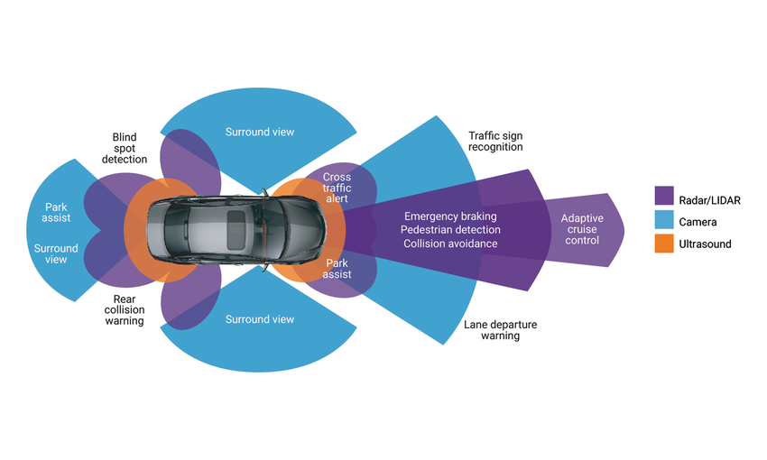
How do we make an autonomous vehicle ?
Lets break this into its fundamentals
- Make the Vehicle Drive By Wire
- Perception
- Localization
- Path planning and control mechanism
To make the vehicle DBW , there are mainly two options
- Manually actuate the throttle , gear , brake and steering wheel
- Control the vehicle via the ECU's directly , commonly using the CAN protocol
A better a more standard way of doing this would be via CAN
Steering and throttle Control
Steering and throttle being actuated over a CAN bus (from move_base by giving waypoints)
Perception
ACC , Adaptive Cruise control
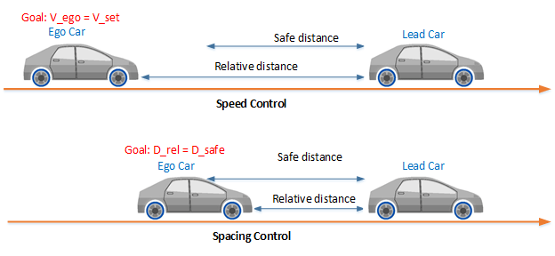
LKA , Lane Keep Assist
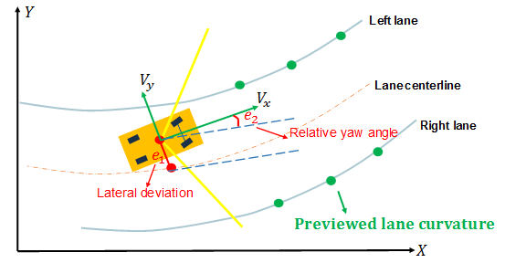
Localization
3D lidar slam based on NDT mapping using a VLP16 , This provides centimeter level estimation in pose .
Localization + 1R1V
Move_base (using TEB ) + LaneDetection based control mechanism
Different algorithms involved in path planning
- A-Star
- Dijkstras
- TEB (Time Elastic Band)
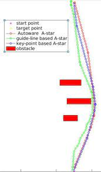
The default local planner presented to you in the move_base navigation stack is the Dynamic Window Approach (and Trajectory Rollout).
The default global planner can be specified as many (including D* as you wrote).
Personally, for autonomous vehicles, I prefer using Timed Elastic Band as my local planner. There are a plethora of planners out there that you can search through and evaluate.
Different control algorithms
- MPC
- Pure Pursuit
- PID based control
- Deep learning based approaches
Transition to a L4/L5 stack
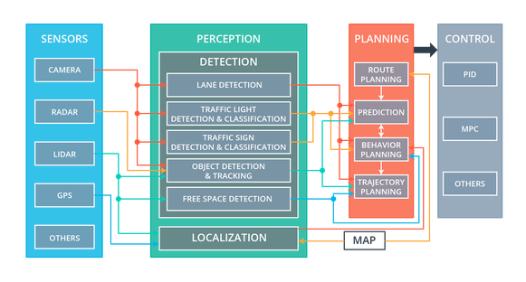
Once we start leveraging MAP as a sensor concept . Where High Definition maps of an Area is already prebuild either manually or in a automated fasion using vehicles mounted with high cost sensor suite and through very good classification algorithms .
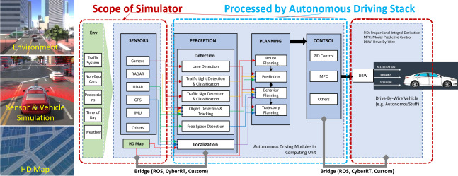
we can then take decisions not just based on typical perception based approaches .
for example
Rather than detecting a Zebra crossing ,
we can use the information already embedded in the map .
- Lane count and classification (such as if its 2 lane , highway )
- Lane rules (such as speed, direction )
- Information on location of Traffic signal lights
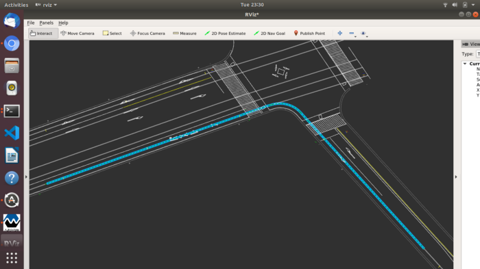
Autonomous Navigation team
LSAD/ ACE at RBEI


Some pictures of the buggy
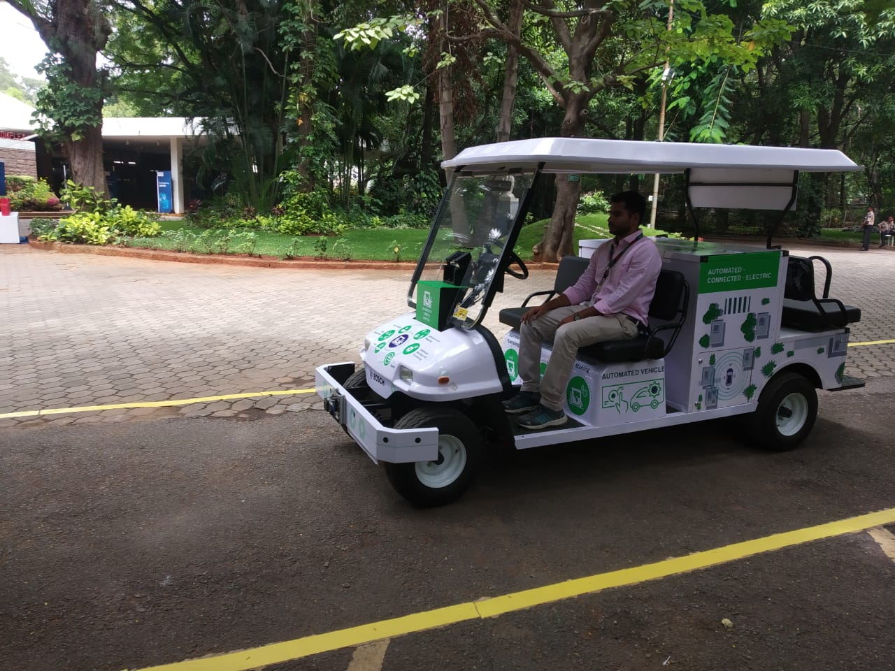
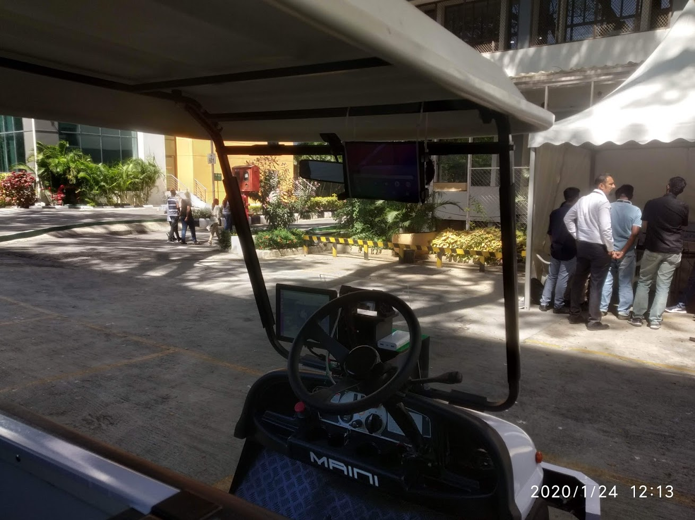


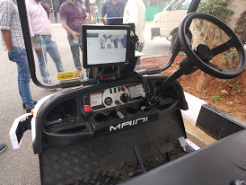
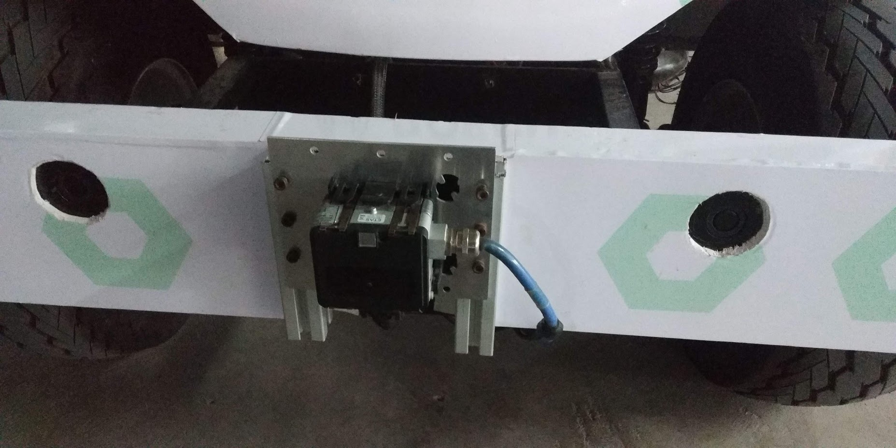